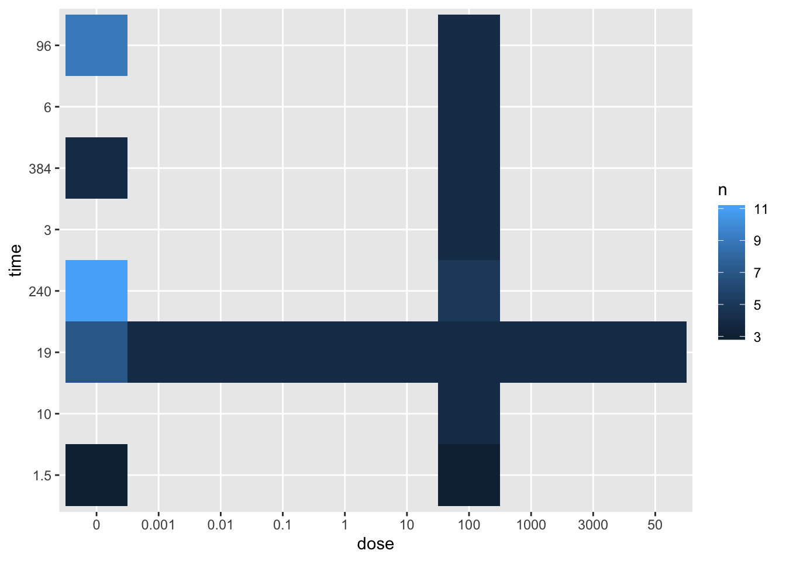
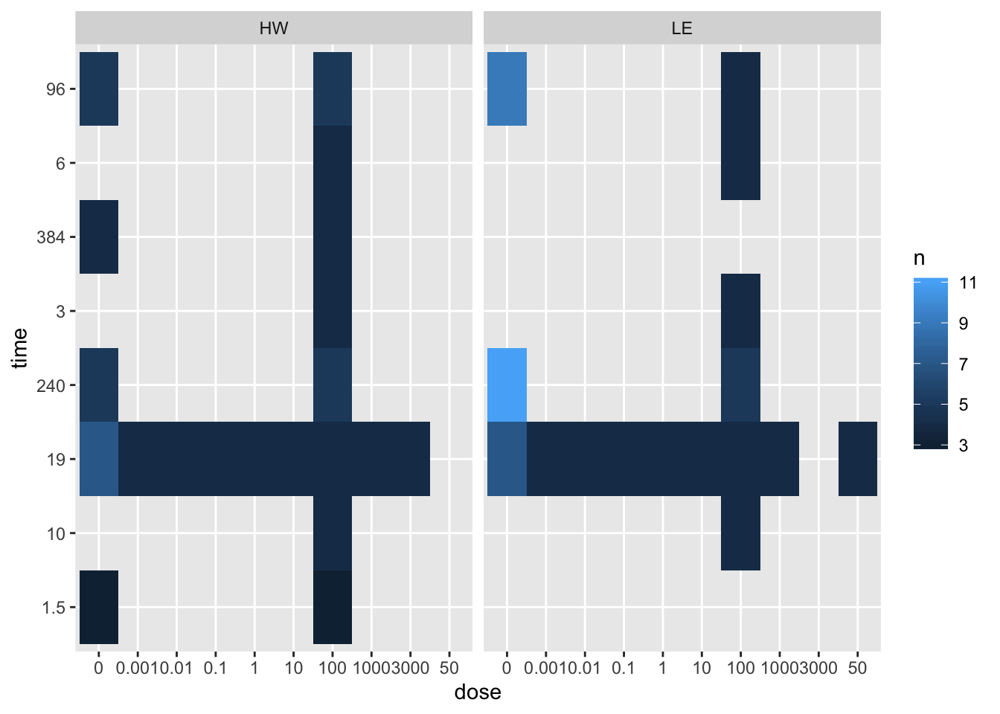

session2
Kevin Wang and Garth Tarr
05/11/2019
Learning outcomes of this session
- Summaring a
data.frame - Making basic plots using
ggplot2: tile plot and scatter plots - Joining two datasets together (
left_join) pivot_longerandpivot_widerto reshape data for plotting purposes
Loading packages
library(tidyverse)
library(skimr)##
## Attaching package: 'skimr'## The following object is masked from 'package:stats':
##
## filterLoading cleaned sample data
session1_data = read_csv(file = "data/clean_sample_data.csv")## Parsed with column specification:
## cols(
## strain = col_character(),
## sample = col_character(),
## time = col_double(),
## dose = col_double()
## )Skimming your data
skimr::skim(session1_data)## Skim summary statistics
## n obs: 165
## n variables: 4
##
## ── Variable type:character ─────────────────────────────────────────────────────────────────────
## variable missing complete n min max empty n_unique
## sample 0 165 165 3 7 0 165
## strain 0 165 165 2 2 0 2
##
## ── Variable type:numeric ───────────────────────────────────────────────────────────────────────
## variable missing complete n mean sd p0 p25 p50 p75 p100 hist
## dose 0 165 165 158.11 496.73 0 0 1 100 3000 ▇▁▁▁▁▁▁▁
## time 0 165 165 79.78 106.74 1.5 19 19 96 384 ▇▂▁▁▂▁▁▁Mutating data
clean_sample_data = session1_data %>%
dplyr::mutate(dose = as.character(dose),
time = as.character(time))Making summary statistics
Counting number of samples
clean_sample_data %>%
group_by(strain) %>%
count()## # A tibble: 2 x 2
## # Groups: strain [2]
## strain n
## <chr> <int>
## 1 HW 85
## 2 LE 80clean_sample_data %>%
group_by(strain) %>%
summarise(n())## # A tibble: 2 x 2
## strain `n()`
## <chr> <int>
## 1 HW 85
## 2 LE 80Counting with more variables
clean_sample_data %>%
group_by(strain, dose) %>%
count()## # A tibble: 18 x 3
## # Groups: strain, dose [18]
## strain dose n
## <chr> <chr> <int>
## 1 HW 0 24
## 2 HW 0.001 4
## 3 HW 0.01 4
## 4 HW 0.1 4
## 5 HW 1 4
## 6 HW 10 4
## 7 HW 100 33
## 8 HW 1000 4
## 9 HW 3000 4
## 10 LE 0 27
## 11 LE 0.001 4
## 12 LE 0.01 4
## 13 LE 0.1 4
## 14 LE 1 4
## 15 LE 10 4
## 16 LE 100 25
## 17 LE 1000 4
## 18 LE 50 4clean_sample_data %>%
group_by(strain, dose, time) %>%
count()## # A tibble: 36 x 4
## # Groups: strain, dose, time [36]
## strain dose time n
## <chr> <chr> <chr> <int>
## 1 HW 0 1.5 3
## 2 HW 0 19 7
## 3 HW 0 240 5
## 4 HW 0 384 4
## 5 HW 0 96 5
## 6 HW 0.001 19 4
## 7 HW 0.01 19 4
## 8 HW 0.1 19 4
## 9 HW 1 19 4
## 10 HW 10 19 4
## # … with 26 more rowsMaking simple plots
count_data = clean_sample_data %>%
group_by(strain, dose, time) %>%
count() %>%
ungroup()
count_data %>%
ggplot(aes(x = dose, y = time, fill = n)) +
geom_tile()
count_data %>%
ggplot(aes(x = dose, y = time, fill = n)) +
geom_tile() +
facet_grid(~strain)
(Extension: ordering using factors)
class(session1_data$dose)## [1] "numeric"unique(session1_data$dose)## [1] 0e+00 1e+02 1e-03 1e-02 1e-01 1e+00 1e+01 1e+03 3e+03 5e+01class(count_data$dose)## [1] "character"unique(count_data$dose)## [1] "0" "0.001" "0.01" "0.1" "1" "10" "100" "1000"
## [9] "3000" "50"dose_order = sort(unique(session1_data$dose))
clean_count_data = count_data %>%
dplyr::mutate(dose = factor(dose, dose_order))
clean_count_data %>%
ggplot(aes(x = dose, y = time, fill = n, label = n)) +
geom_tile() +
geom_text() +
facet_grid(~strain)
Reading in gene expression data (top 10 rows)
raw_ge_data = read_delim(file = "data/GSE43251_NanoString_non-normalized.txt", delim = "\t", n_max = 5)## Parsed with column specification:
## cols(
## .default = col_double(),
## GB_ACC = col_character(),
## GENE_SYMBOL = col_character()
## )## See spec(...) for full column specifications.# raw_ge_data = read_tsv(file = "data/GSE43251_NanoString_non-normalized.txt", n_max = 5)
raw_ge_data = raw_ge_data %>%
dplyr::select(-1)
# raw_ge_data = raw_ge_data %>%
# dplyr::select(-GB_ACC)left_join sample data
ge_sample_data = data.frame(
sample = colnames(raw_ge_data)[-1],
ge_data_available = "yes"
)
joined_sample_data = left_join(clean_sample_data, ge_sample_data, by = "sample")## Warning: Column `sample` joining character vector and factor, coercing into
## character vectorjoined_sample_data## # A tibble: 165 x 5
## strain sample time dose ge_data_available
## <chr> <chr> <chr> <chr> <fct>
## 1 HW HW1 1.5 0 yes
## 2 HW HW2 1.5 0 yes
## 3 HW HW3 1.5 0 yes
## 4 HW HW4 1.5 100 yes
## 5 HW HW5 1.5 100 yes
## 6 HW HW6 1.5 100 yes
## 7 HW WW45 3 100 yes
## 8 HW WW46 3 100 yes
## 9 HW WW47 3 100 yes
## 10 HW WW48 3 100 yes
## # … with 155 more rowstidyr::pivot_longer the gene expression data
ge_data_long = raw_ge_data %>%
tidyr::pivot_longer(
cols = -GENE_SYMBOL,
names_to = "sample",
values_to = "gene_expression")
ge_data_long## # A tibble: 770 x 3
## GENE_SYMBOL sample gene_expression
## <chr> <chr> <dbl>
## 1 Ahrr HW1 13.0
## 2 Ahrr HW2 1.42
## 3 Ahrr HW3 1.29
## 4 Ahrr HW4 9.96
## 5 Ahrr HW5 7.55
## 6 Ahrr HW6 5.45
## 7 Ahrr WW41 29.7
## 8 Ahrr WW42 30.2
## 9 Ahrr WW45 18.1
## 10 Ahrr WW46 22.4
## # … with 760 more rowslong_sample_ge_data = clean_sample_data %>%
left_join(ge_data_long, by = "sample") %>%
dplyr::filter(!is.na(GENE_SYMBOL))tidyr::pivot_wider the gene expression data
wide_sample_ge_data = long_sample_ge_data %>%
tidyr::pivot_wider(names_from = "GENE_SYMBOL",
values_from = "gene_expression")write_csv(long_sample_ge_data, path = "data/long_sample_ge_data.csv")
write_csv(wide_sample_ge_data, path = "data/wide_sample_ge_data.csv")Session Info
sessionInfo()## R version 3.6.1 (2019-07-05)
## Platform: x86_64-apple-darwin15.6.0 (64-bit)
## Running under: macOS Mojave 10.14.6
##
## Matrix products: default
## BLAS: /Library/Frameworks/R.framework/Versions/3.6/Resources/lib/libRblas.0.dylib
## LAPACK: /Library/Frameworks/R.framework/Versions/3.6/Resources/lib/libRlapack.dylib
##
## locale:
## [1] en_AU.UTF-8/en_AU.UTF-8/en_AU.UTF-8/C/en_AU.UTF-8/en_AU.UTF-8
##
## attached base packages:
## [1] stats graphics grDevices utils datasets methods base
##
## other attached packages:
## [1] skimr_1.0.7 visdat_0.5.3 readxl_1.3.1 janitor_1.2.0
## [5] forcats_0.4.0 stringr_1.4.0 dplyr_0.8.3 purrr_0.3.3
## [9] readr_1.3.1 tidyr_1.0.0 tibble_2.1.3 ggplot2_3.2.1
## [13] tidyverse_1.2.1
##
## loaded via a namespace (and not attached):
## [1] tidyselect_0.2.5 xfun_0.10 reshape2_1.4.3 haven_2.1.1
## [5] lattice_0.20-38 snakecase_0.11.0 colorspace_1.4-1 vctrs_0.2.0
## [9] generics_0.0.2 htmltools_0.4.0 yaml_2.2.0 utf8_1.1.4
## [13] rlang_0.4.1 pillar_1.4.2 glue_1.3.1 withr_2.1.2
## [17] modelr_0.1.5 plyr_1.8.4 lifecycle_0.1.0 munsell_0.5.0
## [21] gtable_0.3.0 cellranger_1.1.0 rvest_0.3.4 evaluate_0.14
## [25] labeling_0.3 knitr_1.25 fansi_0.4.0 broom_0.5.2
## [29] Rcpp_1.0.2 scales_1.0.0 backports_1.1.5 jsonlite_1.6
## [33] hms_0.5.2 digest_0.6.22 stringi_1.4.3 grid_3.6.1
## [37] cli_1.1.0 tools_3.6.1 magrittr_1.5 lazyeval_0.2.2
## [41] crayon_1.3.4 pkgconfig_2.0.3 zeallot_0.1.0 ellipsis_0.3.0
## [45] xml2_1.2.2 lubridate_1.7.4 assertthat_0.2.1 rmarkdown_1.16
## [49] httr_1.4.1 rstudioapi_0.10 R6_2.4.0 nlme_3.1-141
## [53] compiler_3.6.1